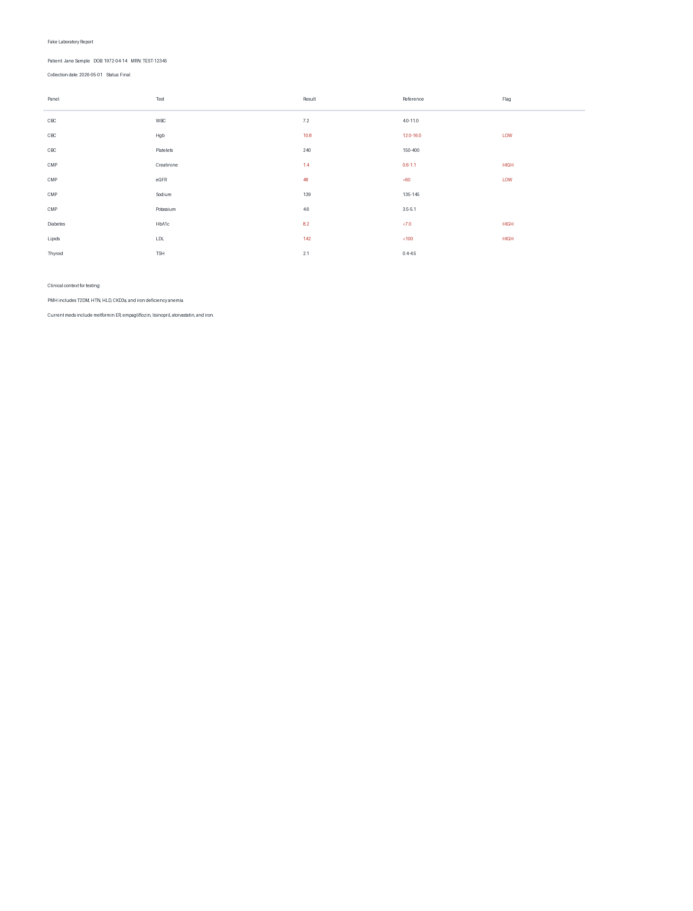

Results Note Extension Test
Highlight fake PMH, medications, labs, or imaging below, then click the extension and choose Use Selection or Add Selection.
Fake Lab PDF/Image Files

Fake Past Medical History
Past medical history:
- Type 2 diabetes mellitus
- Hypertension
- Hyperlipidemia
- Chronic kidney disease stage 3a
- Iron deficiency anemia
- Nephrolithiasis
- GERD
- Osteoarthritis of bilateral knees
Past surgical history:
- Appendectomy in 2012
- Total abdominal hysterectomy in 2018
Fake Medication List
Current medications:
- Metformin ER 1000 mg PO BID
- Empagliflozin 10 mg PO daily
- Lisinopril 20 mg PO daily
- Atorvastatin 40 mg PO nightly
- Amlodipine 5 mg PO daily
- Ferrous sulfate 325 mg PO every other day
- Acetaminophen 500 mg PO q6h PRN pain
Medication allergies:
- NKDA
Fake Lab Results
CBC: WBC 7.2, Hgb 10.8 low, Platelets 240.
CMP: Creatinine 1.4 high, eGFR 48 low, Sodium 139, Potassium 4.6.
A1c 8.2 high.
Fake Imaging Report
CT Abdomen/Pelvis with contrast
Indication: Left lower quadrant abdominal pain.
Findings:
Lung bases are clear. Liver, gallbladder, pancreas, spleen, and adrenal glands are unremarkable. Mild left hydronephrosis. 4 mm obstructing calculus in the distal left ureter near the UVJ. No bowel obstruction. Appendix is normal. No free air or free fluid.
Impression:
1. 4 mm obstructing distal left ureteral stone with mild left hydronephrosis.
2. No bowel obstruction or appendicitis.